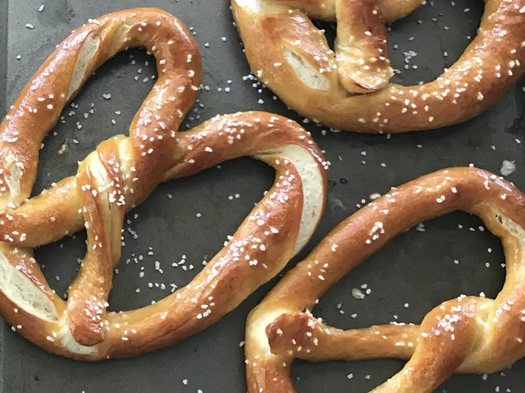

Soft Pretzels

Description
A pretzel from German pronunciation, standard German: Breze(l) is a type of baked pastry
made from dough that is commonly shaped into a knot. The traditional pretzel shape is a
distinctive symmetrical form, with the ends of a long strip of dough intertwined and then
twisted back onto itself in a particular way (a pretzel loop or pretzel bow). Today,
pretzels come in various shapes, textures, and colors, but the original soft pretzel is
still one of the most common pretzel types to date.
Ingredients
- 1 ¼ cups warm water (110 degrees F/45 degrees C), or more as needed
- 4 teaspoons active dry yeast
- 1 teaspoon white sugar
- 5 cups all-purpose flour
- ½ cup white sugar
- 1 ½ teaspoons salt
- 1 tablespoon vegetable oil, or more as needed
- ½ cup baking soda
- 4 cups hot water
- ¼ cup kosher salt, for topping
Steps
- Pour 1 ¼ cups warm water into a medium bowl. Dissolve yeast and 1 teaspoon sugar in
warm water; let stand until creamy, about 10 minutes.
- Mix flour, ½ cup sugar, and salt together in a large bowl. Make a well in the center;
add yeast mixture and oil. Mix well and form into a dough. If mixture is dry, add one
or two more tablespoons of water.
- Knead dough until smooth, about 7 minutes. Lightly oil a large bowl, place dough in
the bowl, and turn to coat with oil. Cover with plastic wrap and let rise in a warm
place until doubled in size, about 1 hour.
- Preheat the oven to 450 degrees F (230 degrees C). Grease 2 baking sheets.
- Pour 4 cups hot water into a large bowl. Stir in baking soda until dissolved;
set aside.
- Turn dough out onto a lightly floured surface and divide into 12 equal pieces. Roll
each piece into a rope and twist into a pretzel shape.
- Once all of the dough is shaped, dip each pretzel into the baking soda-hot water
solution and place on the prepared baking sheets. Sprinkle with kosher salt.
- Bake in preheated oven until browned, about 8 minutes.
- Enjoy!